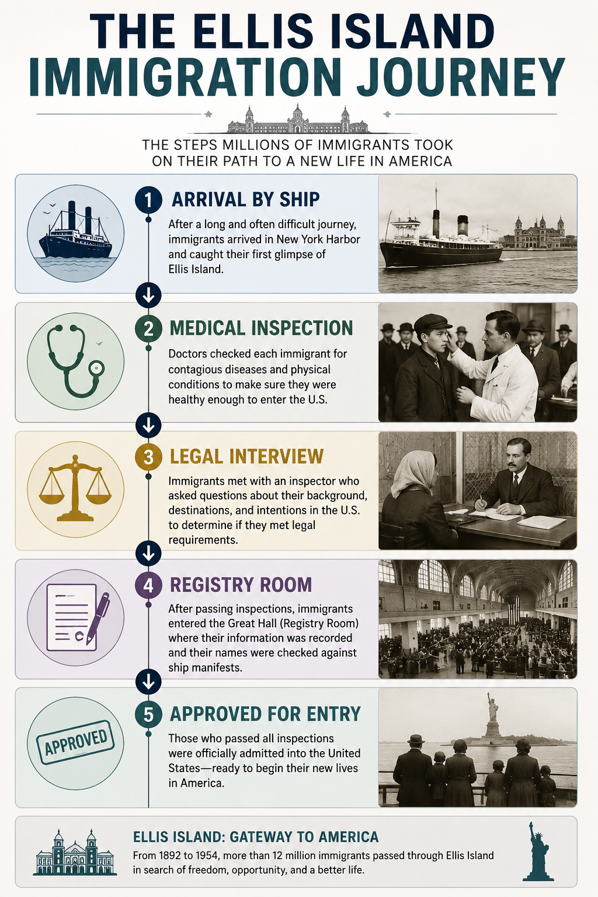

If you're wondering whether the Statue of Liberty and Ellis Island are worth visiting, the short answer is yes — provided you plan ahead. Set aside 4–6 hours, book the first ferry of the day if possible, and don’t rush Ellis Island. While Lady Liberty is the icon everyone comes to see, many visitors end up saying Ellis Island is the part they remember most.
| Time Needed | 4–6 hours |
| Best Time to Visit | First ferry of the morning |
| Best Seasons | Spring and Fall |
| Official Ferry Required? | Yes |
| Can You Visit Without the Ferry? | No |
| Can You Go Inside the Statue? | Yes, with Pedestal or Crown tickets |
| Crown Access | Advance reservation required |
| Food Available | Yes, on both islands |
| Restrooms | Available on Liberty Island, Ellis Island & ferry terminals |
| Wheelchair Accessible | Most areas are accessible |
| Good for Kids? | Absolutely |
Why This Attraction Is More Than Just a Photo Stop
Every year, millions of people visit the Statue of Liberty. Surprisingly, many leave feeling underwhelmed. Not because the attraction isn’t impressive — but because they underestimated how much planning it requires.
Some arrive at the wrong ferry terminal. Others buy the wrong ticket. Many show up exactly at their reservation time, only to discover they’re joining a long airport-style security queue before they even reach the boat. Perhaps the biggest mistake of all? Rushing through Ellis Island in thirty minutes because they assumed it was simply “the stop after the statue.”
It isn’t.
The Statue of Liberty gives you one of the most recognizable landmarks in the world. Ellis Island gives you one of America’s most powerful stories. Together, they create one of the most rewarding half-day experiences in New York City. Plan it properly, and you’ll leave with far more than a few skyline photos.
Who Should Visit?
This experience is especially worthwhile if you are visiting New York City for the first time, interested in American history, curious about immigration and family heritage, traveling with children, or looking for some of the best skyline photography opportunities in NYC.
It may not be the best fit if you’re only in New York for one day and trying to squeeze in as many attractions as possible. Since the visit typically takes half a day, it’s worth giving it the time it deserves.
If you’re still building your itinerary, read our complete guide on planning the perfect NYC trip before deciding which day to visit the Statue of Liberty.
A Brief History Before You Go
Understanding a little history makes the visit far more meaningful. The Statue of Liberty wasn’t originally built by the United States — it was a gift from France to celebrate the ideals of liberty and the friendship between the two nations after the American Revolution.
French sculptor Frédéric Auguste Bartholdi designed the statue, while the internal iron framework was engineered by Gustave Eiffel, who later became famous for designing the Eiffel Tower. The statue was officially dedicated in 1886 and has welcomed generations of visitors arriving by sea ever since.
Standing from the ground to the tip of the torch, Lady Liberty reaches approximately 305 feet (93 meters) into the sky and weighs around 225 tons.
Look at the tablet Lady Liberty holds. Inscribed in Roman numerals is JULY IV MDCCLXXVI — July 4, 1776, the date of the United States Declaration of Independence.
Meanwhile, neighboring Ellis Island tells another chapter of the American story. Between 1892 and 1954, approximately 12 million immigrants passed through Ellis Island, making it the busiest immigrant inspection station in American history. Today, it’s estimated that around 40% of Americans can trace at least one ancestor through Ellis Island. Suddenly, this isn’t just another sightseeing stop — it’s a place where millions of family stories began.
How Visiting the Statue of Liberty Actually Works
One of the biggest misconceptions is that there are several ways to reach the Statue of Liberty. There aren’t. You must take the official ferry if you want to visit Liberty Island or Ellis Island.
Walk there, kayak there, arrive by private sightseeing boat and go ashore, or use the free Staten Island Ferry to access the islands. The only ferry authorized by the National Park Service is operated by Statue City Cruises.
Every legitimate ticket includes round-trip ferry transportation, entry to Liberty Island, entry to Ellis Island, admission to the Statue of Liberty Museum, and admission to the Ellis Island National Museum of Immigration.
If someone approaches you outside Battery Park claiming they can sell you “Statue of Liberty tickets,” politely decline and continue walking to the official ticket area. Many visitors mistakenly purchase sightseeing cruises thinking they’ll be able to step onto Liberty Island. They won’t.
Official Statue of Liberty Tours on Viator
Booking in advance is strongly recommended during spring, summer, weekends, and holiday periods — popular time slots sell out fast. Booking through Viator gives you the Reserve Now, Pay Later option, so you can lock in your preferred slot without immediate payment, plus free cancellation on most bookings.
Choosing Your Departure Point
There are only two official ferry departure locations, and choosing the right one depends largely on where you’re staying. Whichever terminal you choose, you’ll enjoy exactly the same island experience once you’re aboard.
Best for Most Visitors
Convenient if you’re staying anywhere in Manhattan. Easy access via multiple subway lines. Simple to combine with Wall Street, the Financial District, One World Observatory, or the 9/11 Memorial.
Because it’s the most popular departure point, expect longer security lines and larger crowds.
Often Overlooked — But Worth Considering
Better if you’re driving, staying in New Jersey, or prefer a calmer departure experience with beautiful views of Manhattan before boarding. Parking is significantly easier here than in Lower Manhattan.
| If You Are... | Best Departure Point |
|---|---|
| Staying in Manhattan | Battery Park |
| Staying near Wall Street | Battery Park |
| Driving | Liberty State Park |
| Staying in New Jersey | Liberty State Park |
| Visiting from Jersey City | Liberty State Park |
| Using NYC Subway | Battery Park |
Many people assume their ferry ticket time is when the boat leaves. It isn’t. Your reservation time is when you’re expected to enter the security screening process — think of it like arriving at an airport. During busy periods, security alone can easily take 30–60 minutes. Aim to arrive at least 30–45 minutes before your scheduled ticket time.
Choosing the Right Ticket: General Admission vs Pedestal vs Crown
Most people assume they need the most expensive ticket to have the best experience. In reality, that’s not always true. The majority of visitors book General Admission tickets and leave completely satisfied. The good news? Every ticket includes access to both islands and both museums. The difference is simply how much of the statue itself you can enter.
General Admission
The sweet spot for most travelers. Includes everything you need for a full experience.
- ✓ Round-trip ferry
- ✓ Liberty Island
- ✓ Ellis Island
- ✓ Statue of Liberty Museum
- ✓ Ellis Island Museum
- ✓ All outdoor grounds
- ✕ Inside pedestal
- ✕ Crown access
Pedestal Reserve
Everything in General Admission plus access inside the statue’s pedestal. Often the best value upgrade — you get the experience of going inside without the physical demands of the crown climb.
- ✓ Everything in General Admission
- ✓ Inside the monument
- ✓ Additional exhibits
- ✓ Elevated viewing areas
- ✓ Stairs or elevator access
- ✕ Crown access
Crown Reserve
The ticket everyone asks about — and the hardest one to secure. Often sells out weeks or months in advance, particularly in summer, Spring Break, and major holidays.
- ✓ Everything in Pedestal
- ✓ Climb into the crown
- ✓ View through historic windows
- ⚠ 162 stairs, no elevator
- ⚠ Narrow spiral staircase
- ⚠ Strict visitor limits
Full Ticket Comparison
| Feature | General Admission | Pedestal Reserve | Crown Reserve |
|---|---|---|---|
| Ferry Transportation | ✓ | ✓ | ✓ |
| Liberty Island | ✓ | ✓ | ✓ |
| Ellis Island | ✓ | ✓ | ✓ |
| Statue Museum | ✓ | ✓ | ✓ |
| Ellis Island Museum | ✓ | ✓ | ✓ |
| Statue Grounds | ✓ | ✓ | ✓ |
| Inside Pedestal | ✕ | ✓ | ✓ |
| Crown Access | ✕ | ✕ | ✓ |
| Elevator Available | N/A | Yes | Partial |
| Sells Out Quickly | Rarely | Sometimes | Frequently |
The Torch: A Common Misconception

One question appears constantly: “Can I go into the torch?” No. The torch has been closed to the public since 1916, following the Black Tom explosion — a sabotage attack in New York Harbor that damaged the monument. Today, visitors can admire the torch from below, but public access remains prohibited.
Fortunately, the original torch is preserved inside the Statue of Liberty Museum. Many visitors consider seeing the original torch one of the highlights of their trip.
Look closely at Lady Liberty’s feet. You’ll notice broken chains and shackles — they symbolize freedom from oppression and tyranny. Because they’re difficult to see from many angles, countless visitors leave without ever noticing them. Now you’ll know where to look.
Security: What It’s Really Like
Security is one of the most underestimated parts of the visit. Many people arrive expecting to walk directly onto the ferry. Instead, they’re greeted by an airport-style screening process. It’s straightforward — but you should plan for it.
Before Boarding the Ferry
Every visitor passes through metal detectors and bag screening. During busy periods, this can take 30–60 minutes, sometimes longer. That’s why arriving early matters so much.
Additional Screening for Pedestal & Crown
Pedestal and crown ticket holders pass through a second screening process before entering the monument. This is more similar to entering a federal building. Quick, but factor it into your schedule.
Rules occasionally change, so always verify current restrictions before your trip. Generally speaking: avoid large luggage, weapons, sharp objects, and oversized backpacks. Traveling light makes the entire experience easier.
The Ferry Ride Is Part of the Attraction
Many first-time visitors think of the ferry as transportation. It’s actually one of the best parts of the experience. Within minutes of leaving Manhattan, you’ll have incredible views of Lower Manhattan, One World Trade Center, New York Harbor, Governors Island, and the Statue of Liberty. Because you’re on the water, you’ll enjoy angles of the skyline that simply aren’t possible from land.
Leaving Manhattan: stand on the right side for the best approaching views of Lady Liberty. Returning to Manhattan: stand on the left side for excellent views of the skyline as you approach the city.
Best Photography Times
🌞 Early Morning
Softer light, fewer crowds, clearer viewing areas, cooler temperatures. The first ferry produces the best conditions for photography.
🌈 Golden Hour
Warm colors and beautiful skyline lighting create more dramatic images. Trade-off: more visitors and longer lines.
| Location | Best For | Tip |
|---|---|---|
| Right side — leaving Manhattan | Approaching Statue of Liberty | Move to the right as soon as you board; this side fills up fast |
| Left side — returning to Manhattan | Manhattan skyline panorama | Best late afternoon when the skyline catches warm light |
| Liberty Island perimeter promenade | Classic statue compositions, harbor views, New Jersey skyline | Walk further from the ferry dock — fewer people in frame |
| Flagpole area, Liberty Island | Statue + harbor + skyline in a single frame | One of the most versatile and underrated photography spots on the island |
| Ellis Island outdoor grounds | Manhattan skyline, quiet harbor views | Most visitors skip this — go after the museum for peaceful shots |
Liberty Island: What to See and How Much Time You Need
Many people assume Liberty Island is simply a place to take a photo and leave. That would be a mistake. A realistic visit usually requires 1.5–3 hours depending on your ticket type and interest level.
First Stop: Walk the Grounds
Before rushing into the museum, take a few minutes to walk around the island. From different points you’ll enjoy front-facing statue views, Manhattan skyline panoramas, New Jersey skyline views, and harbor photography opportunities. The further you walk from the ferry dock, the better your photos usually become. Many visitors never make it beyond the immediate arrival area — don’t be one of them.
One underrated viewpoint sits near the large American flag. From here you’ll often capture the statue, harbor views, and Manhattan skyline elements all within a single frame — one of the island’s most versatile photography locations.
The Statue of Liberty Museum: Don’t Skip It
One of the biggest surprises for first-time visitors is how good the museum actually is. Many people walk in expecting a few old photographs and historical plaques. Instead, you’ll find a modern, thoughtfully designed museum that explains not only how the Statue of Liberty was built, but why it became one of the world’s most enduring symbols of freedom. Even without pedestal or crown access, the museum alone adds tremendous value to a General Admission ticket. Plan to spend 45–60 minutes here.
The Original Torch

The original torch used from 1886 until the 1980s restoration is displayed indoors, allowing visitors to see details that would be impossible from outside. Many people don’t realize the flame visible today is a modern replacement — the original was removed after decades of weather damage. If you’re interested in photography, this exhibit is one of the most impressive indoor photo opportunities on Liberty Island.
The Immersive Theater
The museum features a short introductory film that tells the story of Lady Liberty through the eyes of immigrants, workers, engineers, and visitors. It’s well worth watching before exploring the exhibits because it provides context that makes everything else more meaningful.
How the Statue Was Built
One of the most fascinating sections explains the engineering behind the monument — how thousands of copper sheets were shaped by hand, why copper was chosen, how Gustave Eiffel designed the internal iron framework, and how the statue was shipped across the Atlantic in hundreds of pieces before being reassembled in New York Harbor. Seeing the construction process gives you a completely different appreciation for the monument’s scale.
Ellis Island: The Heart of the Experience
For many visitors, Ellis Island ends up being the emotional highlight of the day. Between 1892 and 1954, approximately 12 million immigrants passed through Ellis Island. Today, historians estimate that around 40% of Americans can trace at least one ancestor through this immigration station. Whether or not your own family has a connection here, it’s difficult not to imagine the hopes, fears, and uncertainty people felt as they entered the Great Hall more than a century ago.
Unlike many history museums, Ellis Island tells its story through real people — their photographs, their belongings, their letters, their dreams. Give yourself time here. A visit of 1.5–3 hours is ideal.
The Great Hall (Registry Room)

If you’ve seen historic photographs of Ellis Island, this is probably the room you recognize. The enormous Registry Room was where immigrants waited to be inspected before being admitted into the United States. Standing here today is surprisingly moving. Take a few minutes to stop, look around, and imagine the thousands of conversations that once filled this space. It’s one of those places where history feels very close.
A Common Myth About Ellis Island
You’ve probably heard that immigration officers routinely changed immigrants’ names at Ellis Island. It’s a popular tale — it’s also largely a myth. In reality, passenger names had already been recorded on ship manifests before travelers left Europe. Officials at Ellis Island generally worked from those documents. Many name changes actually happened years later as families adapted to life in America or simplified spellings on their own.
Family History Center
One of the most popular stops inside the museum is the American Family Immigration History Center. Here, visitors can search historical immigration records to see whether ancestors arrived through Ellis Island. Even if you don’t discover a family connection, browsing the passenger records offers an incredible glimpse into the journeys that brought millions of people to America. If you already know the names of relatives who immigrated during this period, do a little research before your trip — you may have a much easier time locating their records.

Explore the Outdoor Grounds
Most visitors head straight back to the ferry after leaving the museum. That’s a shame. The outdoor areas are peaceful, uncrowded, and offer excellent views across New York Harbor. Take a walk and you’ll discover memorials honoring immigrants, historic hospital buildings visible in the distance, Manhattan skyline viewpoints, and quiet benches overlooking the harbor. After the emotional intensity of the museum, it’s the perfect place to slow down before returning to Manhattan.
Food, Drinks & Restrooms
Both Liberty Island and Ellis Island have cafés where you can buy meals, snacks, and drinks. However, prices tend to be higher than elsewhere in New York, which is typical for major attractions. If you’re looking to save money, consider eating breakfast before arriving and planning a late lunch after returning to Manhattan. Bringing a reusable water bottle is also a good idea, especially during warmer months. Restrooms are available on Liberty Island, Ellis Island, and ferry terminals.
Accessibility
The ferries are wheelchair accessible. Both museums are accessible. Elevators provide access to many areas of the monument, including the pedestal. However, the climb to the crown is only accessible by stairs and requires ascending 162 narrow steps. If mobility is a concern, General Admission or Pedestal tickets are usually the better choice. Families with strollers will find the islands easy to navigate thanks to wide pathways and ramps.
What to Wear
Both islands are fully exposed to the elements. Even if Manhattan feels warm, conditions on the harbor can be noticeably windier. Dress in layers so you can adapt throughout the day. Comfortable walking shoes are essential — you’ll spend several hours walking through museums, ferry terminals, and outdoor paths.
☀️ Summer
Bring sunscreen, carry water, and wear a hat if you’re sensitive to the sun. The combination of heat, direct sunlight on the water, and several hours of walking can be more draining than expected.
❄️ Cooler Months
A lightweight windproof jacket makes a noticeable difference. Wind off the harbor can make temperatures feel significantly colder than in the city, even on milder days.
Common Mistakes to Avoid
- Arriving exactly at your ticket time instead of allowing time for security
- Assuming the free Staten Island Ferry stops at Liberty Island (it doesn’t)
- Booking Crown tickets only a few weeks before your trip and expecting availability
- Rushing through Ellis Island in less than an hour
- Forgetting sunscreen or water during summer
- Skipping the Statue of Liberty Museum
- Buying unofficial ferry tickets from street sellers
- Planning another major attraction immediately afterward without allowing enough time
Planning your first visit? Don’t miss our guide to the most common mistakes first-time NYC visitors make — many of them can be avoided with a little preparation.
Frequently Asked Questions
How far in advance should I book Statue of Liberty tickets?▾
Is the Staten Island Ferry the same as the Statue of Liberty ferry?▾
How long does the Statue of Liberty and Ellis Island visit take?▾
Is the Statue of Liberty worth it without Crown access?▾
What is the best time of day to visit the Statue of Liberty?▾
Can children visit the Statue of Liberty?▾
Is there parking near Battery Park?▾
The Ultimate NYC Bucket List Map
A pre-pinned Google Map with 250+ attractions, food spots, and hidden gems organized by neighborhood — including Battery Park, the Staten Island Ferry terminal, and Lower Manhattan highlights to combine with your Statue of Liberty visit.
Get the Map